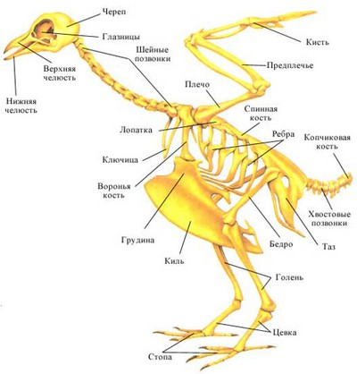
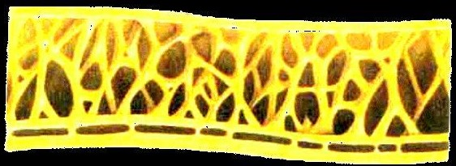
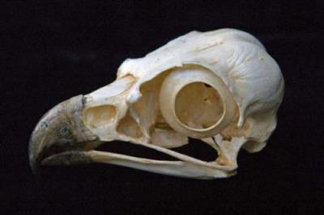
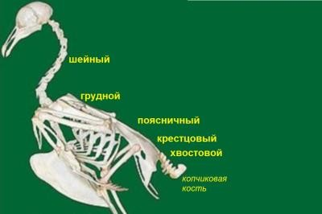
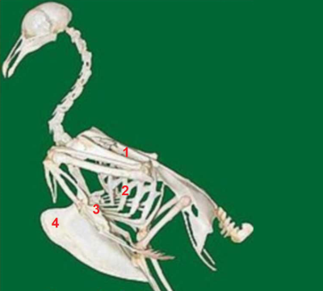
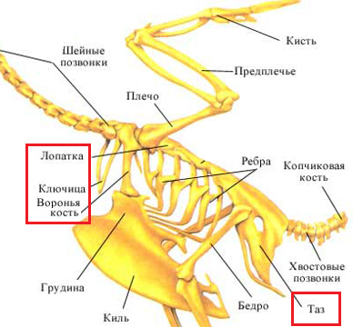
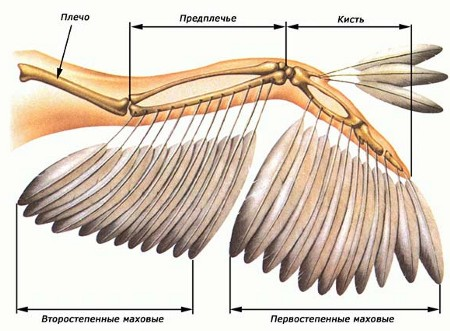
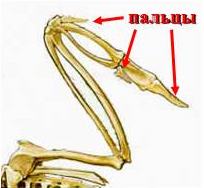
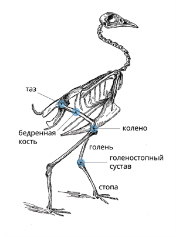
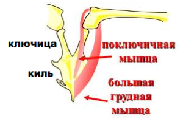

Главная
Скелет у птицСкелет и мышцы — составные части Скелет представляет собой опору для тела и органов движения, защищает важнейшие органы. За счёт работы мышц осуществляется движение.  опорно-двигательная система птицы Скелет птицы имеет важные особенности, связанные с полётом и передвижением на нижних (задних) конечностях.  Строение полых костей птицы ЧерепЧереп лёгкий, состоит из черепной коробки и челюстей.  Черепная коробка птицы Скелет туловищаСкелет туловища образован позвоночником и грудной клеткой.
 Отделы позвоночника у птицы Поясничные позвонки полностью срастаются между собой, с крестцовыми позвонками, тазовыми костями и частью хвостовых позвонков, образуя сложный крестец. Копчик служит основой для прикрепления рулевых перьев.  Грудина (3) имеет вертикальный вырост — киль (4), к которому крепятся мышцы, приводящие в движение крылья. У нелетающих птиц киль отсутствует. Скелет поясов конечностейПояс верхних конечностей (плечевой пояс)
 Пояс задних конечностей Пояс задних конечностей: образован парными тазовыми костями, сросшимися с поясничным и крестцовым отделами позвоночника. Скелет свободных конечностей Скелет верхней (передней) конечности — крыла (1)
 Скелет верхней (передней) конечности — крыла (2) Скелет задней конечности:
Цевка (сросшиеся мелкие косточки стопы) — приспособление для приземления у птиц.  Скелет задней конечности МышцыМускулатура у птиц хорошо развита. Особенно хорошо развиты мышцы, необходимые для полёта (их вес составляет половину общего веса птицы!): большие грудные мышцы (они опускают крыло) и подключичные мышцы (они поднимают крыло).  Мышцы имеющие важную роль в полёте птицы Опускание крыльев в полёте требует от птицы большего усилия, чем подъём. Поэтому мышцы, которые опускают крылья, гораздо крупнее, чем мышцы, поднимающие их. |
|
|
|
|
 Подняться наверх
Подняться наверх